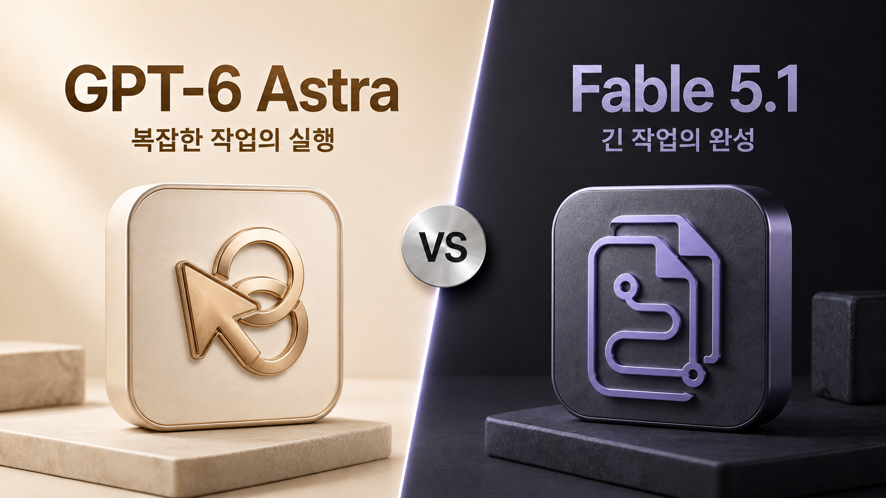

안녕하세요. dev.log입니다.
코드를 고치거나 여러 문서를 읽고 보고서를 만들 때, 어느 AI에 맡겨야 재작업을 줄일 수 있을까요? OpenAI의 GPT-6 Astra와 Anthropic의 Claude Fable 5.1은 이런 복잡한 작업을 겨냥한 상위 AI 모델입니다. 이미 쓰는 앱에서 이용할 수 있는 모델을 먼저 시험하고, 새로 선택한다면 완성도와 비용 중 무엇이 더 중요한지에 따라 후보를 좁혀 보세요.
현재 외부 종합 평가에서는 Fable 5.1의 점수가 더 높고, 같은 평가에서 과제 하나를 처리한 비용은 Astra가 더 낮습니다. 프로그램에서 모델을 호출하는 API의 기본 단가는 두 모델이 같습니다. 실제 비용은 자료를 읽고 답변을 만드는 데 사용한 양에 따라 달라집니다. 아래 수치와 이용 조건은 2026년 9월 6일 확인한 자료를 기준으로 합니다.

Astra와 Fable 5.1의 기본 사양
두 모델 모두 글과 이미지를 읽고 텍스트를 생성합니다. 여기에 파일 검색, 코드 실행, 브라우저 조작 같은 도구를 연결하면 자료 조사부터 결과물 작성까지 여러 단계를 수행할 수 있습니다. 이처럼 AI가 도구를 사용하며 작업을 이어 가는 방식을 에이전트 작업이라고 부릅니다. 실제로 쓸 수 있는 도구는 모델을 실행하는 앱과 연결 설정에 따라 달라집니다. Astra 공식 안내, Fable 5.1 공식 안내
토큰은 AI가 글을 나누어 처리하는 단위입니다. 한 번에 다룰 수 있는 대화와 자료의 범위를 컨텍스트 창이라고 하며, 이 범위에는 생성할 답변도 포함됩니다. 같은 한국어 문서라도 모델마다 토큰 수가 다를 수 있으므로 용량을 문서 페이지 수로 단순 환산하기는 어렵습니다.
다음은 앱의 파일 업로드 한도와 구분되는 모델/API 사양입니다. OpenAI 모델 문서, Claude 모델 문서
| 항목 | GPT-6 Astra | Claude Fable 5.1 |
|---|---|---|
| 개발사 | OpenAI | Anthropic |
| 컨텍스트 창 | 105만 토큰 | 100만 토큰 |
| 최대 출력 | 12만 8천 토큰 | 12만 8천 토큰 |
| 입력과 출력 | 글·이미지 → 글 | 글·이미지 → 글 |
| API 모델 ID | gpt-6-astra | claude-fable-5-1 |
많은 문서를 넣을 수 있어도 그 안에서 서로 모순되는 조건을 놓칠 수 있습니다. 컨텍스트 용량과 실제 문제 해결 능력은 구분해서 보아야 합니다.
외부 평가의 점수와 과제 비용
Artificial Analysis는 여러 과제를 직접 실행해 모델을 평가하는 외부 평가 기관입니다. 이곳의 Intelligence Index는 코딩, 추론, 문서 이해, 업무 수행 등을 합친 지수로, 높을수록 해당 평가에서 좋은 결과를 냈다는 뜻입니다. 정답률이나 한국어 글쓰기 점수는 아닙니다.
9월 4일 지수가 v4.2로 개편되었습니다. 업무·문서 과제가 추가되고 평가 비중도 바뀌었으므로, 출시 기사에 있는 이전 버전 점수와 섞으면 안 됩니다. 아래 표는 두 모델의 현재 페이지가 함께 표시하는 v4.2를 사용했습니다. 평가 개편 안내
| v4.2 평가 항목 | Astra | Fable 5.1 |
|---|---|---|
| 추론 설정 | max | max, 기본 대체 모델 사용 |
| 종합 지수, 높을수록 좋음 | 55 | 57 |
| 과제당 가중평균 비용, 낮을수록 좋음 | $2.57 | $6.12 |
출처는 Astra 평가 페이지와 Fable 5.1 평가 페이지입니다. max는 많은 추론을 허용하는 설정이며, 같은 이름이 두 회사에서 동일한 연산량이나 대기 시간을 뜻하지는 않습니다. Fable의 기본 대체 모델 사용은 안전장치에 걸린 일부 요청을 다른 Claude 모델이 처리하는 조건입니다.
이 결과만 놓고 보면 점수를 우선하는 후보는 Fable 5.1, 평가 비용을 줄이는 후보는 Astra입니다. 과제당 비용은 새 자료의 입력, 이전 자료의 재사용, 추론과 답변 생성에 든 비용을 평가별로 가중평균한 값입니다. 앱의 월 구독료나 내 업무 한 건의 예상 견적으로 읽어서는 안 됩니다.
코딩 도구까지 포함한 9월 3일 Coding Agent Index 발표도 있습니다. Artificial Analysis는 Astra를 사용한 Codex에 67점, Fable 5.1을 사용한 Claude Code에 70점을 기록했습니다. 이 수치는 모델에 더해 파일 편집과 도구 실행 환경을 함께 평가한 결과이며, 위 종합 지수와는 척도가 다릅니다. 코딩 에이전트 평가 발표
따라서 이 표로 “Fable의 한국어 문장이 더 자연스럽다”거나 “Astra가 모든 코딩 작업을 더 빨리 끝낸다”고 결론 내릴 수는 없습니다. 한국어 보고서가 목적이라면 근거 누락과 수정량을, 코딩이 목적이라면 실제 테스트 통과 여부를 확인해야 합니다.
긴 작업을 위한 API 기능
Astra의 API는 외부 도구가 실행되는 동안 다른 독립적인 작업을 이어 가는 비동기 도구 호출을 지원합니다. 작업 도중 새 요구 사항을 보내 이미 끝낸 작업을 보존하면서 계속 진행하는 기능도 제공합니다. 예를 들어 자료를 모으는 중에 보고서 대상 독자를 바꾸는 상황에 활용할 수 있습니다. 앱 개발자가 해당 기능을 구현해야 하며, 모든 채팅 화면에서 동일하게 제공된다는 뜻은 아닙니다. Astra 사용 가이드
Fable 5.1은 대화 중 추론 강도를 바꾸면서 캐시를 유지하는 기능과, 도구 호출 사이에 진행 상황을 텍스트로 받는 기능을 제공합니다. 두 기능은 베타입니다. 긴 코드 수정이나 문서 작성에서 사용자가 진행 상황을 확인할 수 있도록 구성할 때 유용합니다. 기본 응답 설정에서는 진행 안내가 비어 있을 수 있으므로, 개발자는 표시 옵션을 확인해야 합니다. Fable 5.1 변경 사항
작업 도중의 지시 변경이나 진행 표시가 중요하다면, 사용하는 앱이 이 기능을 어떻게 제공하는지 확인하세요. 모델의 API 기능과 앱 화면에서 쓸 수 있는 기능은 구분해야 합니다.
캐시와 장문 입력의 요금 차이
아래 가격은 사용량에 따라 청구되는 API의 표준 요금입니다. 월 구독료와 구분되며 별도 할인은 반영하지 않았습니다. 캐시는 반복해서 보내는 자료를 재사용하는 기능으로, 처음 저장할 때와 다시 읽을 때의 단가가 다릅니다.
| 100만 토큰당 표준 단가 | Astra | Fable 5.1 |
|---|---|---|
| 일반 입력 | $10 | $10 |
| 출력 | $50 | $50 |
| 캐시 읽기 | $1 | $0.25 |
| 캐시 쓰기 | $12.50 | $12.50, 5분 기준 |
Astra 가격 문서와 Claude 가격표에 따른 값입니다. Fable은 1시간 캐시 쓰기에 별도 단가를 적용하므로 위 표는 모든 캐시 보존 옵션을 같다고 가정한 비교가 아닙니다.
장문 입력에서도 차이가 있습니다. Astra는 입력이 27만 2천 토큰을 넘으면 해당 요청 전체의 입력·캐시 단가가 2배, 출력 단가가 1.5배가 됩니다. Fable 5.1의 100만 토큰 컨텍스트에는 장문 할증 없이 표준 단가가 적용됩니다. Astra 장문 요금, Claude 컨텍스트 안내
가격표가 실제 계산에 미치는 영향을 보기 위해, 두 모델에 같은 토큰 수를 적용한 예시를 계산했습니다. 아래 결과는 실사용 청구서가 아닌 단가 계산이며, 출력은 추론을 포함한 과금 대상 출력 전체로 가정했습니다. 도구 요금, 세금, 할인은 제외했습니다.
| 가정한 요청 1회 | Astra | Fable 5.1 |
|---|---|---|
| 새 입력 10만 + 출력 1만 토큰 | $1.50 | $1.50 |
| 기존 캐시 읽기 10만 + 새 입력 1만 + 출력 1만 | $0.70 | $0.625 |
| 새 입력 30만 + 출력 1만 토큰 | $6.75 | $3.50 |
두 번째 행은 캐시가 이미 만들어져 적중한 후속 요청만 계산했으며, 최초 캐시 쓰기 비용은 포함하지 않았습니다. 마지막 행은 Astra의 장문 할증을 반영해 0.3 × $20 + 0.01 × $75로 계산했습니다. Fable은 같은 토큰 수에 표준 단가를 적용했습니다.
캐시 읽기 단가가 4분의 1이어도 전체 청구액이 4분의 1로 줄지는 않습니다. 출력 비용은 그대로 남고, 실제로 생성하는 추론과 답변의 양도 모델마다 다릅니다. 따라서 입력 할인과 한 과제를 끝내는 총비용은 다른 방향으로 움직일 수 있습니다.
내 작업에서 먼저 시험할 모델
공개 평가와 이용 조건을 바탕으로 정리한 시험 순서입니다. 자신의 과제로 결과를 확인한 뒤 채택 여부를 정하세요.
| 내 상황 | 먼저 시험할 선택 | 선택 이유 |
|---|---|---|
| 이미 한쪽 앱에 자료와 도구를 연결한 경우 | 그 앱에서 제공하는 비교 대상 모델 | 같은 작업 환경에서 결과 차이를 확인하기 쉬움 |
| 어려운 과제의 완성도를 우선하는 경우 | Fable 5.1 | 최신 외부 종합 평가에서 더 높은 점수 |
| API 과제 비용이 중요한 경우 | Astra도 함께 시험 | 외부 종합 평가에서 더 낮은 과제당 비용 |
| 긴 문서를 반복해서 읽히는 경우 | Fable 5.1 | 낮은 캐시 읽기 단가와 장문 할증 없는 요금 |
시작할 때는 모델 접근 권한과 추가 과금부터 확인하세요. Astra는 OpenAI API에서 gpt-6-astra로 지정합니다. Fable 5.1은 Claude 앱의 모델 선택 메뉴에서 선택하거나 API에서 claude-fable-5-1을 지정합니다. Claude Code에서는 2.1.255 이상이 필요합니다. OpenAI 모델 목록, Fable 이용 안내
특히 Claude Pro에서 Fable 5.1은 구독에 포함된 사용량 대신 별도 사용 크레딧으로 과금됩니다. Max에서는 플랜 사용량에 포함되지만 Fable에 쓸 수 있는 주간 한도가 따로 적용됩니다. 모델이 목록에 보인다고 추가 비용이 없다고 가정하지 마세요. 플랜별 Fable 과금 조건
비교 과제는 평소 다시 손보는 일이 많은 작업 하나면 충분합니다. 보고서라면 같은 원문으로 근거가 표시된 초안을 요청하고, 코딩이라면 같은 저장소 상태에서 같은 오류를 수정하도록 요청해 보세요. 자료·도구·완료 조건을 맞추고 추론 설정을 기록하세요. 어떤 모델이 만든 결과인지 가린 뒤 빠진 요구 사항, 사람이 수정한 시간, 총비용을 비교하면 모델을 바꿀 이유가 있는지 판단하기 쉽습니다.
한국어 문장 다듬기가 주목적이라면 문서 몇 편을 직접 비교한 뒤 선택하세요. 종합 평가의 작은 점수 차이보다, 내가 고쳐야 하는 문장이 얼마나 줄었는지가 그 작업에는 더 직접적인 기준입니다.